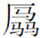
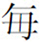
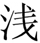
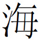
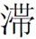
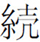

中文
一画
一（273）
二画
二（274） 十（275） 丁（276） 七（276） 卜（276） 八（276） 人（276）
入（277） 儿（277） 九（277） 又（277）
三画
三（277） 干（279） 工（279） 士（279） 土（279） 大（279） 万（281）
才（282） 夨（282） 上（282） 山（282） 巾（283） 千（283） 亿（283）
及（283） 广（283） 之（284） 女（284） 小（284） 飞（286） 马（286）
子（286） 乡（286）
四画
王（286） 开（287） 天（287） 元（288） 无（289） 韦（290） 云（290）
专（290） 艺（290） 木（291） 五（292） 支（293） 不（293） 太（294）
历（294） 友（295） 比（295） 戈（295） 互（295） 切（296） 瓦（296）
少（296） 日（296） 中（296） 见（299） 气（299） 毛（299） 长（300）
化（300） 仇（300） 父（300） 从（300） 今（300） 公（300） 月（301）
风（301） 乌（301） 六（301） 文（302） 方（306） 为（306） 斗（306）
订（307） 心（307） 尹（307） 引（307） 巴（307） 邓（308） 劝（308）
双（308） 以（308） 书（308） 水（308） 孔（308） 幻（309）
五画
玉（309） 未（309） 示（310） 巧（310） 功（310） 世（310） 古（311）
本（312） 札（312） 左（312） 石（313） 右（313） 龙（313） 平（313）
打（314） 东（314） 北（315） 卢（316） 旧（316） 目（316） 申（316）
甲（317） 电（317） 田（318） 史（318） 四（318） 生（319） 失（320）
付（320） 仪（320） 白（320） 他（320） 丛（320） 印（321） 句（321）
外（321） 鸟（321） 乐（321） 尔（321） 立（321） 玄（322） 闪（322）
兰（322） 汇（322） 汉（322） 写（323） 礼（323） 记（323） 永（323）
司（324） 尼（324） 民（324） 弗（324） 弘（325） 出（325） 皮（325）
边（325） 发（325） 圣（325） 台（326） 母（326） 辽（326） 幼（326）
六画
式（326） 动（326） 耳（327） 吉（327） 考（327） 老（327） 芒（327）
亚（327） 芝（327） 朴（327） 权（328） 再（328） 西（328） 百（329）
有（329） 而（330） 存（330） 灰（330） 达（330） 列（330） 死（330）
夷（331） 托（331） 扬（331） 至（331） 过（331） 贞（331） 师（332）
当（332） 虫（332） 曲（332） 吕（332） 同（332） 吊（332） 因（332）
朱（333） 先（333） 竹（333） 传（333） 华（333） 仰（334） 伪（334）
自（334） 伊（334） 血（334） 后（335） 全（335） 会（336） 企（336）
众（337） 创（337） 杂（337） 名（338） 多（338） 争（338） 庄（338）
庆（338） 齐（338） 刘（338） 羊（338） 关（338） 冲（339） 汗（339）
江（339） 池（339） 汤（339） 宇（339） 决（339） 安（339） 冰（340）
字（340） 讳（340） 许（340） 论（340） 农（340） 导（340） 阮（340）
阴（341） 妇（341） 她（341） 好（341） 戏（341） 观（341） 叒（342）
红（342） 纪（342） 纫（342）
七画
进（342） 远（343） 坏（343） 贡（343） 孝（343） 坟（343） 志（343）
花（343） 芥（343） 严（343） 克（344） 苏（344） 杜（345） 杨（345）
李（345） 两（346） 丽（346） 还（346） 来（347） 医（347） 折（347）
投（347） 护（347） 求（347） 吴（347） 时（348） 男（348） 困（348）
呐（348） 听（348） 吹（348） 别（348） 我（348） 每（349） 何（349）
但（349） 作（349） 佚（349） 伴（349） 佛（349） 近（350） 彷（350）
余（350） 希（350） 谷（350） 豸（350） 龟（350） 奂（350） 狂（351）
饮（351） 系（351） 言（351） 亨（351） 庐（351） 忘（351） 快（351）
闲（351） 汪（351） 泛（351） 沉（351） 沈（351） 宋（352） 宏（353）
穷（353） 良（353） 社（353） 补（354） 初（354） 词（354） 译（354）
张（355） 陆（355） 阿（355） 陈（356） 附（356） 陀（356） 妙（356）
妒（356） 劲（357） 鸡（357） 纺（357） 驴（357）
八画
武（357） 青（357） 现（357） 表（359） 其（359） 取（359） 坦（359）
坡（359） 苦（359） 若（359） 英（360） 茑（360） 范（360） 直（360）
茅（360） 林（360） 板（360） 松（360） 述（361） 枕（361） 或（361）
画（361） 事（361） 卖（361） 雨（361） 矿（361） 奔（361） 奇（362）
轰（362） 拓（362） 抱（362） 瓯（362） 欧（362） 贤（362） 尚（362）
果（362） 国（363） 明（364） 易（364） 典（365） 忠（365） 郘（365）
咄（365） 岩（365） 罗（365） 岭（365） 凯（365） 图（366） 知（366）
物（366） 版（366） 佩（366） 质（366） 往（366） 金（366） 斧（368）
受（368） 周（369） 匋（369） 备（369） 京（369） 夜（370） 庚（370）
放（370） 於（370） 性（370） 怡（370） 炉（370） 郑（370） 卷（370）
净（370） 浅（371） 法（371） 河（371） 学（371） 波（372） 泾（372）
宝（372） 宜（372） 实（372） 诗（372） 话（373） 建（373） 隶（373）
居（373） 屈（373） 弥（373） 弦（373） 陕（373） 迦（374） 参（374）
承（374） 贯（374） 孟（374） 绀（374） 孤（374） 绍（374） 经（375）
函（375）
九画
契（375） 春（375） 珂（376） 城（376） 赵（376） 荆（376） 革（377）
茜（377） 草（377） 茶（377） 荀（377） 茗（377） 荒（377） 茫（377）
故（377） 胡（378） 南（378） 药（379） 柏（379） 树（380） 威（380）
面（380） 括（380） 拾（380） 挥（380） 战（380） 点（380） 竖（380）
显（380） 星（380） 昨（380） 昭（381） 毘（381） 贵（381） 思（381）
炭（381） 幽（381） 钦（381） 拜（382） 看（382） 选（382） 香（382）
种（382） 秋（382） 科（382） 重（383） 复（383） 顺（383） 俄（383）
俗（383） 信（383） 皇（383） 鬼（383） 剑（383） 胜（383） 脉（383）
狱（384） 急（384） 疯（384） 音（384） 恒（384） 闺（384） 闻（384）
炼（384） 养（384） 美（384） 类（385） 迷（385） 前（385） 洪（385）
洛（385） 济（385） 觉（385） 语（385） 神（386） 祝（386） 说（386）
郡（388） 咫（388） 费（388） 眉（388） 除（388） 娇（388） 姚（388）
勇（388） 癸（388） 结（389） 给（389） 骆（389） 绝（389） 孩（389）
统（389）
十画
耕（389） 秦（389） 泰（390） 班（390） 赶（390） 起（390） 都（390）
恐（390） 莽（390） 莫（390） 荷（391） 晋（391） 恶（391） 真（391）
桂（391） 桃（391） 格（392） 校（392） 栟（392） 索（392） 贾（392）
夏（392） 破（392） 顾（392） 热（393） 监（393） 晓（393） 峭（393）
圆（393） 铁（393） 积（394） 笔（394） 徐（394） 殷（394） 般（395）
爱（395） 翁（395） 馀（395） 高（396） 郭（396） 痀（396） 离（396）
唐（396） 旅（398） 部（398） 阅（398） 烦（398） 烟（398） 剡（398）
凌（398） 益（398） 准（399） 资（399） 涛（399） 涑（399） 浙（399）
涅（399） 海（399） 浮（400） 流（400） 浣（400） 浪（400） 宾（401）
容（401） 诸（401） 读（401） 被（401） 谈（402） 屐（402） 陶（402）
陷（403） 通（403） 绥（403）
十一画
聊（403） 域（403） 埤（403） 教（404） 黄（404） 萌（404） 萝（405）
萃（405） 菩（405） 萧（405） 梦（405） 梵（405） 桯（406） 梅（406）
曹（406） 副（406） 龚（407）

（407） 盛（407） 雪（407） 辅（407）推（407） 授（407） 常（407） 野（407） 晨（408） 眼（408） 曼（408）
晚（408） 冕（408） 鄂（409） 啸（409） 崖（409） 铜（409） 移（409）
笺（409） 符（409） 笠（409） 第（409） 做（409） 偏（409） 悉（409）
逸（409） 猛（410） 庸（410） 康（410） 章（410） 商（410） 望（410）
情（410） 惜（410） 阎（410） 剪（411） 清（411） 渚（411） 淞（411）
渠（412） 淑（412） 渑（412） 淮（412） 淳（412） 深（412） 梁（412）
涵（412） 寄（413） 寂（413） 宿（413） 密（413） 隋（413） 随（413）
续（413） 维（414） 巢（414）
十二画
琬（414） 斯（414） 越（414） 博（416） 散（416） 董（416） 敬（416）
蒋（416） 落（416） 韩（417） 朝（417） 植（417） 焚（417） 雁（417）
插（417） 搜（417） 雅（417） 悲（418） 棠（418） 赏（418） 掌（418）
最（418） 景（418） 遗（418） 啼（418） 赌（418） 黑（418） 铸（418）
短（418） 嵇（418） 程（419） 等（419） 傅（419） 集（419） 焦（419）
粤（419） 循（419） 舒（419） 释（420） 鲁（420） 敦（420） 蛮（421）
童（421） 愧（421） 善（421） 道（421） 遂（421） 湖（421） 渺（422）
温（422） 溃（422） 游（422） 寒（422） 谢（422）
十三画
瑜（423） 鼓（423） 蒿（423） 楔（423） 楚（423） 楷（423） 楞（423）
槐（423） 楼（423） 赖（423） 碑（423） 颐（423） 虞（424） 路（424）
蜈（424） 蜕（424） 罪（424） 蜀（424） 嵊（424） 嵩（424） 锦（424）
辞（424） 筠（424） 毁（425） 微（425） 愈（425） 鲍（425） 解（425）
痴（425） 靖（426） 新（426） 意（428） 雍（428） 慎（428） 粮（428）
慈（428） 窦（428） 愙（429） 群（429） 嫉（429） 叠（429）
十四画
静（429） 碧（429） 嘉（429） 摹（429） 蔡（429） 模（429） 歌（430）
臧（430） 裴（430） 管（430） 舆（430） 鼻（430） 遯（430） 疑（430）
精（430） 漫（430） 肇（430） 嫩（431） 缪（431）
十五画
增（431） 蕙（431） 蕉（431） 横（431） 樱（431） 樊（431） 飘（431）
醉（431） 影（431） 蝎（432） 墨（432） 稷（432） 德（432） 颜（432）
潜（432） 鹤（432） 豫（433） 畿（433）
十六画
燕（433） 蕗（433） 薛（433） 醒（433） 觱（433） 默（433） 穆（433）
儒（433） 磨（433） 麈（433） 辨（433） 燎（433） 寰（434） 壁（434）
十七画
戴（434） 藏（434） 镡（434） 魏（434） 鍊（434） 濯（434） 蹇（434）
十八画
藕（435） 藤（435） 蟫（435） 簠（435） 鹰（435）
十九画
警（435） 攀（435） 籀（435） 瀛（435）
二十画以上
巍（436） 魔（436） 蠢（436） 籑（436） 麟（436）
日文
假名
あア（436）いイ（437）うウ（437）えエ（438）おオ（439）かカ（439）
きキ（439）くク（440）けケ（440）こコ（441）しシ（441）すス（442）
せセ（443）そソ（443）たタ（444）ちチ（445）つツ（446）てテ（446）
とト（446）なナ（447）にニ（447）のノ（448）はハ（448）ひヒ（449）
ふフ（449）へヘ（451）ほホ（451）まマ（452）みミ（454）めメ（454）
もモ（454）やヤ（455）ゆユ（455）らラ（455）るル（455）れレ（456）
ろロ（456）わワ（457）ゑヱ（457）
汉字
一画
一（457）
二画
二（458） 十（458） 人（458） 九（459）
三画
三（459） 工（459） 土（460） 下（460） 大（460） 万（461） 上（461）
山（461） 口（461） 千（461） 川（461） 凡（461） 丸（461） 女（461）
小（462）
四画
王（463） 天（463） 五（463） 支（463） 不（467） 犬（467） 友（467）
比（467） 切（467） 少（467） 日（467） 中（469） 内（469） 手（469）
亻（469）反（470）文（470）六（473） 巴（474）水（474）
五画
正（474） 世（474） 古（477） 石（477） 右（477） 北（478） 史（478）
四（479） 生（479） 白（480） 外（480） 広（480）  （480） 永（480）
（480） 永（480）
民（480） 弁（480）
六画
刑（481） 老（481） 考（481） 共（481） 西（481） 有（482） 死（482）
托（482） 虫（482）

（482） 印（482） 伝（482） 自（483） 伊（483）向（483） 全（483） 名（483） 巡（483）
七画
言（484） 邦（484） 赤（484） 芸（484） 芥（487） 医（487） 抒（487）
男（487） 図（487） 吼（487） 乱（487） 私（487） 佐（487） 作（487）
近（487） 希（489） 条（489） 庥（489） 沙（490） 汲（490） 瘆（490）
社（490） 改（491）
八画
玩（491） 武（492） 青（492） 表（492） 長（492） 其（493） 苦（493）
若（493） 英（493） 板（494） 柉（494） 東（494） 或（495） 畫（495）
拝（495） 欧（495） 昆（496） 国（496） 明（496） 岩（497） 季（497）
牧（497） 物（497） 版（497） 金（498） 命（498） 周（498） 夜（498）
性（498） 法（498） 学（498） 実（498） 空（498） 房（498） 阿（498）
九画
春（499） 革（499） 草（499） 南（500） 柳（500） 研（500） 郁（500）
面（500） 拷（500） 显（500） 映（500） 星（500） 虹（500） 思（501）
科（501） 信（501） 俚（501） 食（501） 風（501） 独（502） 哀（502）
美（502） 叛（503）

（503） 洒（503）
（503） 神（504） 建（504）勇（504）
十画
泰（504） 素（504） 真（504） 原（504） 殉（504） 造（505） 師（505）
島（505） 殷（505） 沚（505） 恋（505） 高（505） 疾（506） 唐（506）
浮（506） 袖（506） 書（506） 通（507） 紙（507） 陣（507）
十一画
現（507） 理（509） 都（509） 転（510） 虚（510） 黑（510） 異（510）
唯（510） 移（511） 動（511） 第（511） 袋（511） 偶（511） 進（512）
鳥（512） 猟（512） 猫（512） 祭（512） 鹿（512） 断（512） 粕（512）
閉（512） 婚（513） 婦（513） 郷（513） 細（513） 経（513）
十二画
項（513） 越（513） 超（513） 喜（513） 斯（513） 朝（513） 葛（514）
植（514） 森（514） 厨（514） 裂（514） 雄（514） 雲（514） 最（514）
無（515） 筆（516） 悲（516） 集（516） 創（516） 象（516） 童（516）
装（516） 満（516） 営（517） 運（517） 開（517） 階（517） 結（518）
絵（518）
十三画
詩（518） 詭（518） 感（519） 雷（519） 業（519） 園（519） 農（519）
罪（519） 辞（519） 鉄（519） 鈴（519） 愛（519） 猿（520） 痴（520）
新（520） 意（522） 煙（522） 楽（522） 資（523）

（523） 漢（523）戦（523）

（523）十四画
読（523） 静（524） 模（524） 樣（524） 歌（524） 歷（524） 銃（524）
銀（524） 精（524） 漱（525） 漫（525） 漁（525）
十五画
論（525） 蔵（525） 標（526） 輪（526） 憂（526） 戯（526） 賦（526）
賭（526） 影（526） 遺（526） 魯（526） 澄（527）
十六画
壊（527） 燕（527） 機（527）
十七画
雖（527） 輿（527） 貘（527） 貔（527）
十八画
臨（527） 魏（528） 闘（528）
十九画以上
蘇（528） 霧（528） 霰（528） 露（528） 魔（529） 鑑（529） 蠹（529）
拉丁字母
C（530） H（530） R（530）
西文
A（530）B（534）C（536）D（538）E（539）F（541）G（542）
H（544）I（546）J（546）K（547）L（549）M（550）N（552）
O（554）P（554）Q（557）R（557）S（558）T（560）U（561）
V（561）W（562）Z（564）数字（564）
俄文
А（565）Б（565）В（565）Г（565）Д（566）Ж（567）И（567）
К（567）Л（568）М（568）Н（568）О（569）П（569）Р（570）
С（570）Т（571）Ф（571）Х（571）数字（571）